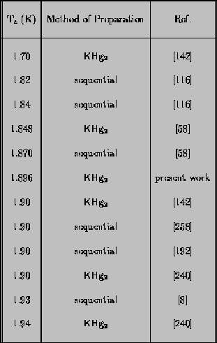
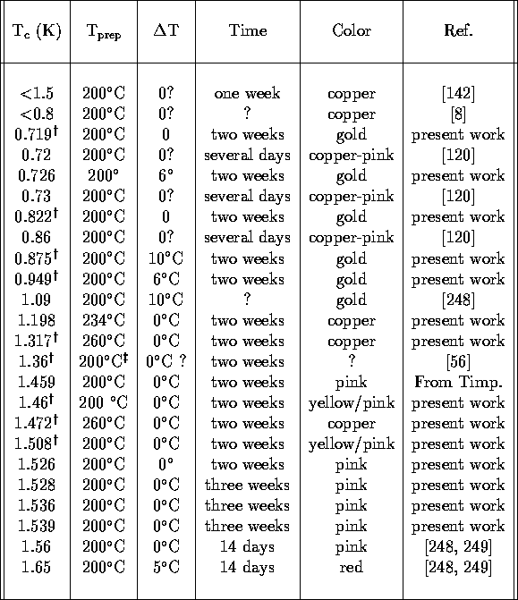

The basis for understanding the synthesis of a ternary graphite intercalation compound comes from an examination of the phase diagram of the relevant binary alloy. The phase diagrams of the K-Hg and Cs-Bi binary alloy systems are shown in Fig. 3.1. There are two reasons that the phase diagrams are important. One is that the phase diagram gives pertinent information about temperatures and alloy compositions necessary for preparation of a given GIC, as discussed below. For example, when a particular heavy element has only limited solubility for the alkali metals, as in the case of lead,[103] then that heavy metal will be difficult, if not impossible, to intercalate in combination with an alloy. This is the case for lead, as has been shown by various unsucessful attempts at intercalation, both here at MIT and by Lagrange and coworkers.[146] Also,since many of the properties of GIC's are similar to those of the intercalant,[67] the phase diagram is a useful source of information about the GIC. For example, inelastic neutron scattering studies of the C8K1-xRbx system have shown that the elastic constants of the intercalant layer are minimum at the same x where the eutectic point of the binary phase diagram occurs.[183]
Figure 3.1: Phase diagrams of the K-Hg and
Cs-Bi binary alloys.[103]
According to Lagrange[145], the stage of a GIC is determined only by the stoichiometry of the starting alloy. This finding is illustrated by Figure 3.2, which shows that a given composition range for each of the K-Hg and Cs-Bi systems corresponds to a unique stage in the final sample. The current study confirms the idea that alloy composition is the primary determinant of stage in the ternary GIC's. Good agreement was also found between the composition ranges indicated on the phase diagrams for production of a given stage and the results reported here.
Figure 3.2: Range of compositions of the
starting alloy which will produce a given stage GIC in the
K-Hg and Cs-Bi binary systems. From Ref. [145]. Upper, K-Hg system. In
region (1), C8K is produced; in region (2),
C4KHg; in region (3), C8KHg; in region
(4), C12KHg; in region (5), higher-stage binary
compounds, or no reaction. Lower, Cs-Bi system. In region
(1), C8Cs is produced; in (2), C4CsBi;
in region (3), no reaction.
There were three fundamentally different methods used to synthesize the specimens used in these studies. These are contact-intercalation, sequential vapor-phase intercalation, and single-step vapor-phase intercalation. In the contact-intercalation and single-step vapor-phase intercalation techniques, the starting alloy was reacted first in an evacuated pyrex tube, and then exposed to the graphite in a separate furnace session. An amount of alloy several times the quantity needed to complete the reaction stoichiometrically was always used. In the sequential intercalation method used for C8KHg, C8K was prepared by reaction of elemental potassium with graphite at 200°C, and then a stoichiometric amount of mercury was reacted with the C8K at 290-300°C. This temperature was chosen to be just above the liquidus line for the compound KHg2 (see the K-Hg phase diagram), from which C8KHg also can be prepared. The sequential-intercalation method was first discovered by El Makrini and coworkers.[73]
The principal difficulty with the single-step vapor-phase intercalation technique was the inaccuracy of measurement of the alkali metal. The volume of the alkali metal was estimated by measuring the volume of its glass container, thereby assuming that the metal filled the container uniformly, without any cavities. A more accurate way of measuring the amount of alkali metal (and of measuring mercury) is to have a microbalance in the glovebox where the metals are handled. This technique was employed by the research group at the University of Kentucky.[63]
Contact intercalation, in which the graphite starting material is actually in contact with the liquid intercalant inside an evacuated pyrex ampoule, was used in the synthesis of all CsBi-GIC's. The starting alloy used in these reactions was Cs5Bi4, and the temperature of the intercalation was about 480°C to 500°C, just above the liquidus line for the alloy (see the phase diagram). If the liquid metal were not placed in contact with the graphite, then even if all other conditions were right, the final product was always C8Cs.[36] This reaction was almost foolproof: every single attempt at making the CsBi-GIC's with the contact method resulted in the intercalation of single-stage CsBi-GIC. C4CsBi0.5 alpha-phase samples were violet, and C4CsBi1.0 beta-phase samples were blue-green, as previously reported. Thus it appeared that the CsBi-GIC's are less sensitive to the details of preparation than the KHg-GIC's.
The difficulty with the contact reaction was that the GIC's were often embedded in the hard alloy metal when the intercalation ampoule was removed from the furnace. Removing the samples from the alloy without fracturing them was often a tricky business. An attempt was made to remove the liquid alloy from the sample surface by tilting the entire furnace a few hours before the intercalation ampoule was to be removed, but these attempts were unsuccessful. The other problem with the CsBi intercalation, which probably is related to the contact reaction, is that macroscopic inclusions of the starting alloy were often found inside the samples. This is discussed further below, and also in Section 6.2.
The single-step vapor-phase two-zone technique can be used to synthesize both C4KHg and C8KHg, as originally reported of El Makrini et al. [73] The modifier ``two-zone'' here refers to the fact that the graphite may be kept at a slightly higher temperature (T prep + DeltaT) than the alloy ( Tprep) in order to prevent condensation of metal on the GIC surface.[67] In the C8KHg case, KHg2 alloy was placed inside an evacuated ampoule with graphite and the two were reacted isothermally at 290°-300°C for three weeks. The KHg2 alloy was silver in color, and the stage II GIC was always blue, both as previously reported.[248] In the C4KHg case, the starting alloys ranged in composition from K2Hg3 to K5Hg4. The reaction was carried out at temperatures between 200°C and 260°C for a period of two weeks. These alloys were gold in color, and the intercalation compounds ranged in tint from gold to copper to pink. No systematic effects were seen as a function of the starting alloy composition in C4KHg. Most reactions were carried out with the alloy KHg.
Temperature differences DeltaT between the graphite and the alloy for C4KHg were varied between 0° and 10°, as opposed to the case for C8KHg, where only isothermal conditions were employed. In the case of isothermal reactions, the intercalation ampoule was wrapped in several thick layers of aluminum foil in order to guard against unintended temperature gradients in the furnace. If the intercalation ampoule was kept short, and a large furnace was used, it is estimated that the temperature at the two ends of the ampoule could be kept the same to within a degree or two. Through use of an ice-point reference on the furnace's temperature controller and liberally applied glass wool insulation, the temperature of the intercalation ampoule could be controlled to within about ±10°C during the reaction.
The outcome of the C4KHg reaction is quite sensitive to the temperature of the furnace. On more than one occasion, a tube containing KHg alloy plus graphite which had mysteriously not reacted at all was removed from the furnace. Half the time the intercalation could be accomplished simply by cooking the tube for another couple of weeks, under apparently identical conditions. The trickiness of the C4KHg intercalation has been noted before by Timp.[248] It is not surprising that the C4KHg intercalation is more difficult than that of a compound with a simpler structure, like C8K, but it is somewhat unexpected that the C4KHg preparation is much more difficult to control than that of C8KHg. Samples from two C8KHg batches are almost indistiguishable from one another, even if one is made through sequential intercalation, and the other made using a single-step vapor-phase reaction. The predictability of the C8KHg reaction is underlined by the reproducibility of its superconducting transition temperature, as measured by several research groups. These Tc values are gathered in Table 3.1. In contrast, the Tc values reported for C4KHg and shown in Table 3.2 exhibit a great deal of scatter.

Table 3.1: Tc values for
C8KHg as reported by several research groups.
There is almost universal agreement on Tc 1.9
K.

Table 3.2: Tc values for
C4KHg as reported by several research groups.
There is a great deal of scatter in the values, which seem to
fall primarily into two groups, with most likely values being
about 0.8 and 1.5 K. dagger indicates a broad
superconducting transition. ddagger indicates a
liquid-nitrogen quenched sample.[58]
Why should the results of the stage II intercalation be so
much more reproducible than those of the stage I? The answer
seems to lie in the multiphase behavior of C4KHg,
as opposed to the single-phase behavior of C8KHg.
C8KHg has only one common in-plane ordering, the
(2×2)R0° in-plane superlattice which has been
observed in neutron diffraction.[124] This ordering is
associated with an Ic = 13.56 Å, the only
repeat distance observed in C4KHg.[124] C4KHg, on
the other hand, has two commonly observed phases. These are
the alpha phase, which has a (2×2)R0°
in-plane ordering and Ic = 10.24 Å, and the
beta phase, which has a
(sqrt3×2)R(30°, 0°) in-plane ordering
and Ic = 10.83 Å.[248,123,246]
More details about the microstructure of the specimens used for the superconductivity studies are given below. The main point to be taken away from the discussion here is that the synthesis of C4KHg is very sensitive to the exact conditions used because different conditions will produce a given combination of phases, as previously noted by Timp.[248]
Even after several years of study of the question of the connection between preparation conditions and the various phases, there are still many uncertainties. As an example, notice in Table 3.2 that the Tc = 0.719 K and 0.822 K gold samples were produced with nominally the same conditions that usually give pink Tc = 1.5 K GIC's. Also, the Tc = 1.472 K and 1.317 K specimens came from the same intercalation ampoule.
A few general statements about the synthesis of C4KHg may be made, despite some uncertainties. Intercalation at temperatures significantly higher than 200°C produces samples with broad superconducting transitions that are more or less copper in color. The intercalation temperature of 350°C used by Yang et al.[270] would be expected to result in specimens with quite broad superconducting transitions. Intentional use of a temperature difference (DeltaT) on the order of 10°C does consistently produce gold, low- Tc specimens, as originally noted by Timp and coworkers.[248,249] Kim and coworkers also observed that use of a temperature difference during intercalation increases the final amount of the Ic = 10.83 Å beta phase.[130] The recent experiments seemed to show that temperature differences on the order of 5°C were sufficient to produce degradation in the superconducting properties, in contrast to Timp's claim that small temperature differences enhance superconductivity.[248]
The snag in this neat explanation is that gold samples were sometimes produced using an isothermal reaction. Whether this was due to poor control of the temperature difference between the alloy and graphite is not known. In addition, attempts to produce gold GIC's with Tc 0.7K sometimes resulted in copper-colored samples with broad transitions. It seems likely that other poorly controlled factors were also playing a role.
One possible factor is the overall time allowed for the reaction. In the current work, and also that of Timp,[249,248] the intercalation was allowed to proceed for two weeks or longer, whereas Iye and collaborators[120] only allowed intercalation to occur for ``several days''. Yang and coworkers also allowed only ``several days'' for their reactions.[270] The Univ. of Nancy group does not specifically state how long they allowed for intercalation of their samples (which were used in the specific heat studies of Alexander et. al[8]). The reaction time could be an important variable if, for example, the higher- Tc phase is the equilibrium state of the system, but its formation is slower than that of the lower- Tc phase. If this were the case, leaving the ampoule in the furnace longer might result in a higher- Tc. Bendriss-Rerhrhaye of the University of Nancy notes that in the CsBi-GIC's the pure beta phase is produced if the reaction is allowed to proceed for two weeks, but that a mixture of alpha and beta is found after only one week.[17]In this interpretation, if for some reason a particular batch of graphite was harder to intercalate, KHg intercalation compounds formed from it might still be in the gold, lower- Tc phase after the usual reaction period, even with DeltaT = 0. Alternatively, a particular intercalation might take longer if the KHg alloy used had been contaminated by air and had a refractory oxide coating.
Another factor in the intercalation of C4KHg which has received little attention in the literature is how the intercalation ampoule was transferred into and out of the furnace. In the experiments reported here, the furnace was always cooled down to about 70°C before the ampoules were removed. Sometimes, though, the furnaces were cooled down overnight. At the University of Kentucky, it was customary to remove ampoules while they were still hot.[63] Sometimes the ampoules were even quenched in liquid nitrogen when they were removed from the oven.[58,107] It is not known what practice the Japanese,[120] French,[73] and previous MIT[249] investigators followed in this regard. If the low- Tc phase is the equilibrium phase at higher temperatures, and the higher- Tc phase is the equilibrium phase at room temperature, then removing the intercalation ampoule from the furnace while hot might quench in the high-temperature, low- Tc phase.
Only recently did the MIT investigators become aware of different practices at different institutions regarding the removal of the intercalation ampoule from the furnace. Unfortunately, little attention was paid to this point during the years of sample synthesis recorded by Table 3.2. Recently it was decided to study the effect of removing the intercalation ampoules from the furnace hot, but the result was sample exfoliation in each of about 5 batches of C4KHg thus prepared. It is not understood why this exfoliation occurred, since it was not a common consequence of hot sample extraction at the Univ. of Kentucky.[63] At any rate, the results of this study were inconclusive.
Annealing studies of C4KHg seem merited in light of the possibility that the higher- Tc GIC's are an equilibrium phase, and the lower- Tc ones are metastable. Particularly if the intercalation reaction has been hindered by slow kinetics, it seems that putting a gold low- Tc sample back into the furnace might improve its superconducting properties. However, as reported by Lagrange et al., the thermal stability of C4KHg is very low, even in the presence of excess amalgam, so that attempts at annealing usually result in deintercalation.[148] The difficulty of thermally annealling C4KHg is not surprising in light of the exfoliation problems reported above.
A third factor in sample preparation which might well be thought to influence Tc is the quality of the graphite host material. In the stage I binary compound C8K, Tc was found to be strongly correlated with the type of graphite used. That is, a Tc of 0.15 K appears to be average for HOPG host material,[141,136,125] but Tc = 0.13 is the highest Tc observed for Grafoil-based samples,[135,137,214] and 0.08 K was reported to C8K powder.[141] In the current series of experiments, no such correlation between graphite type and Tc was found; kish, HOPG, and Madagascar graphite flakes could all be transformed into gold or pink samples, depending on the intercalation conditions used. Defects in the graphite could be responsible for slight variations in Tc in C4KHg, say between 1.5 and 1.55 K. This would imply that the absolute size of the effect of the graphite host on Tc (about 50 mK) is constant between C8K and C4KHg, rather than the percentage change in Tc being constant (50 mK is about 30% of Tc for C8K, but only about 3% of Tc of C4KHg). Certainly the impact of the starting graphite is not as great for C4KHg or C8KHg as for C8K.
The primary conclusion from the study of the synthesis of C4KHg is that higher intercalation temperatures tend to lead to lower Tc's. Elevating the graphite temperature above 200°C seems to suppress Tc, whether the alloy temperature is also raised or not. However, raising the temperature of both the alloy and the graphite tends to give copper-colored samples with broad superconducting transitions and Tc 1.0 K, while raising only the alloy temperature tends to give gold samples with narrower transitions and Tc 0.8 K. These conclusions are in general agreement with those of Timp and colleagues.[248,249] However, the synthesis of C4KHg is still not entirely understood, since the results of intercalation are not altogether predictable. This is believed to be due to the importance of factors whose importance is difficult to evaluate. Among the possibilities are the duration of the intercalation reaction, hot intercalation ampoule extraction, and alloy cleanliness.
Reproducibility problems with the Tc of
C4KHg are undoubtedly due to the several in-plane
phases it can contain. The wide variation found for
C4KHg contrasts with the ease of reproducing
results for C8KHg, which has only one in-plane
phase. One naturally wonders whether the difficulty of
reproducing superconductivity in the CsBi-GIC's is also tied
in with the question of multiple phases. This question is
discussed further in Section 6.2. The section that follows,
Section 3.3, treats the normal-state characterization of the
GIC's used in the superconductivity experiments. The
relationship between the in-plane phases and
superconductivity is the topic of Chapter 5.